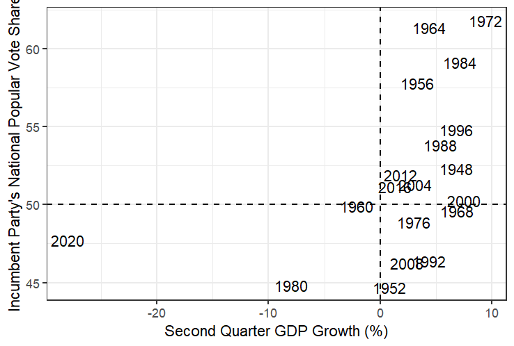
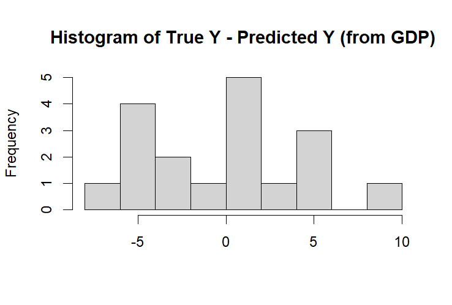
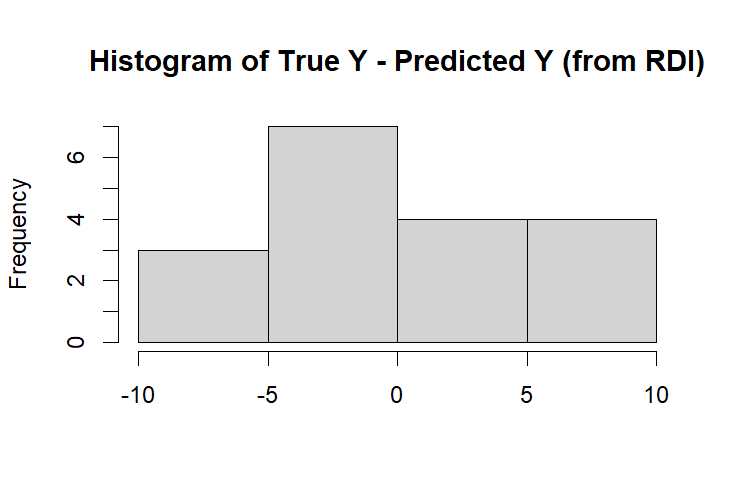
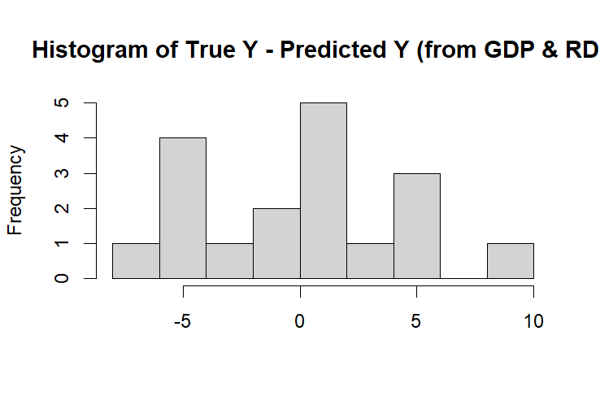

Although last week’s debate drew many viewers and much online discussion, some wondered how much effect it would really have on the outcome of the 2024 election. After all, some longstanding theories suggest that a candidate’s campaign strategy, debate performance, and other actions all fall short to economic variables in the task of prediction. After all, if a voter isn’t doing well economically, wouldn’t that motivate them to seek out a change? And if they are doing well, shouldn’t they vote for the incumbent in their own self-interest? The theory of “pocketbook voting” suggests exactly this: that people vote based on their direct economic situations. In this theory, the economy is the principal variable in an election, and should therefore be able to predict the results. This week, we set out to answer the question: Can we predict election outcomes using only the state of the economy? If so, how well? Specifically, I looked at GDP and RDI (real disposable income), the former of which is a measure of nationwide economic productivity and the latter of which represents how much direct spending power people have. Following the idea of pocketbook voting most closely, the variable most tightly correlated with incumbent votes should be RDI. However, GDP is also often used as a predictive measure because it indicates the overall state of the economy. I compared both measures in a series of model fits and visualizations that focused on mapping previous presidential elections to economic conditions and incumbent vote shares. I also sometimes omitted the case of 2020: as shown in the below two graphs, the change to the economy caused by the COVID-19 pandemic was unprecedented and made it a significant outlier. The following scatter plots graph these two economic measures against the incumbent party’s popular vote share. Including 2020: 
Excluding 2020:
Using linear regressions, I created lines of best fit as follows for the 2020-excluded datasets:
Although they both appear positively correlated, the statistics ended up having different significance values. Focusing only on the 2020-excluded values, here are some of the statistics for GDP and RDI (all when compared to popular vote share):
GDP: Coef 0.7366 Cor 0.569918 R^2 0.3248066 P 0.0135 (significant!) RDI: Coef 0.4604 Cor 0.3338966 R^2 0.1114869 P 0.176 (not!)
Based on these numbers, it’s clear that GDP is a more significant or substantive predictor of popular vote election results. However, I wondered if using both variables together could be an even better predictor. As a result, I also created a combined multivariate linear regression between these two variables, which had interesting results. Coefficients: Estimate Std. Error t value Pr(>|t|) (Intercept) 49.40880 1.75347 28.178 2.1e-14 ** RDPI_growth_quarterly -0.01269 0.36442 -0.035 0.9727 GDP_growth_quarterly 0.74367 0.34155 2.177 0.0458 When controlling for GDP, the coefficient for RDI was actually negative! I also plotted in-sample error for each of the three models (GDP, RDI, Both), in both line charts and histograms, as shown:
  
The histograms suggest that using GDP alone appears to create the most accurate predictions, so the final prediction for 2024 will also be based on that model: The model predicts that the incumbent party (the Democrats) will receive 51.58486% of the popular vote in the 2024 presidential election. Overall, although there is a somewhat significant correlation between GDP and election results, using economic situations alone does not create a perfect model; there are various outliers, especially the year 2020. There are many other reasons that 2024 could be an outlier (Biden stepping down and Harris stepping in last-minute; the outlier-filled candidacy of Trump; the road to economic recovery from COVID) and thus the usual economic models may not work as well for it as they have for past elections.